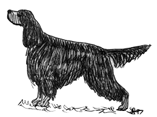

Gordonsetr - standard

Původ:
Velká Británie
Použití:
stavěcí pes (ohař)
Klasifikace F.C.I.:
skupina 7 – stavěcí psi (ohaři)
Sekce 2.2 – britští a irští stavěcí psi, setři
S pracovní zkouškou
Celkový vzhled
Stylový pes, stavěný pro cval. Jeho pevná tělesná stavba odpovídá loveckému koni, který snese
hmotné zatížení. Veskrze symetrických linií.
Použití/ povaha
Inteligentní, zdatný a důstojný. Má smělou, společenskou, milou a vyrovnanou povahu.
Hlava:
Je spíše hlubší, než široká. Vzdálenost od týlního hrbolu ke stopu je větší, než od stopu
k nosu.
Oblasti nad i pod očima jsou suché.
Oblast mozková
Mozkovna
Mírně zaoblená. Nejširší je mezi ušima. Je širší, než čenichová část, dostatečně prostorná
pro
mozek.
Stop
Zřetelně vyjádřený.
Část obličejová
Nosní houba
Velká a široká, s širokými nosními otvory, zbarvení je černé.
Čenichová partie
Dlouhá s téměř rovnoběžnými rovinami, není ani špičatá ani úzká. Není až tak hluboká jako
její
délka.
Pysky
Nejsou volné, ale jasně vyjádřené.
Čelisti/zuby
Čelisti silné, s dokonalým, pravidelným a kompletním nůžkovým skusem, tj. horní řezáky těsně
překrývají dolní řezáky a jsou postaveny kolmo v čelistech.
Líce
Jsou úměrně úzké k suchému profilu hlavy.
Oči
Tmavě hnědé, jiskrné ani příliš zapadlé, ani vystouplé, ale uložené dostatečně pod řasami,
mají bystrý inteligentní výraz.
Uši
Středně velké, tenké. Nízko nasazené a přiléhající k hlavě.
Krk
Dlouhý, suchý, klenutý, bez laloku.
Tělo
Středně dlouhé. Vodorovná hřbetní linie.
Bedra
Široká a lehce klenutá.
Hrudník
Není příliš široký. Hrudní koš je hluboký, žebra dobře klenutá. Poslední žebra směřují
hluboko
dozadu.
Ocas
Rovný nebo lehce ve tvaru turecké šavle, nedosahuje pod hlezenní kloub. Je nesen vodorovně
nebo
pod hřbetní linií. Je silný u kořene a ke špičce se zužuje. Osrstění ve formě vlajky začínající blízko
kořene je
dlouhé, rovné a směrem ke špičce se zkracuje.
Hrudní končetiny
Celkově
Hrudní končetiny mají ploché kosti, jsou rovné a silné..
Rameno
Lopatka dlouhá, šikmo dozadu uložená. Kost je široká a plochá, v kohoutku jsou lopatky
vzájemně
blízko, plece nejsou těžké.
Loket
Nevybočující, dobře přiléhající k tělu.
Metakarpus (nadprstí)
Kolmé k zemi.
Tlapky hrudních končetin
Oválné, těsně uzavřené, dobře klenuté prsty. Mezi prsty je mnoho srsti. Mají silné polštářky
a
vysoký zápěstní polštářek.
Pánevní končetiny
Celkově
Jsou dlouhé široké a svalnaté od kyčlí ke hlezennímu kloubu. Od hlezenního kloubu
k zápěstnímu
polštářku jsou krátké a silné. Kolmé od hlezenního kloubu k zemi. Sklon pánve se blíží k horizontále.
Koleno
Dobře úhlené
Tlapky pánevních končetin
Oválné, těsně uzavřené, dobře klenuté prsty. Mezi prsty je mnoho srsti. Mají silné polštářky
a
hluboký patní polštář.
Krok / chody
Pravidelný volný přesný pohyb se silným posunem/odrazem, který vychází ze zádi.
Osrstění
Srst
Na hlavě, předních stranách končetin, špičce uší krátká a jemná; na ostatních partiích těla
je
srst střední délky bez kudrlin či zvlnění. Osrstění na svrchní straně uší je dlouhé a hedvábné, na zadních
stranách končetin je dlouhé, jemné, ploché a rovné, třásně na břichu mohou dosahovat až k hrudníku a krku
(hrdlu). Co nejméně kudrlin a zvlnění.
Zbarvení
Tmavá lesklá uhlově černá barva bez rezavého nádechu, s odznaky v barvě červeného kaštanu,
tj.
zářivě lesklé pálení. Výskyt černých šmouh na prstech a naspodu čelisti je přípustný. Znaky pálení: dvě
výrazné
skvrny nad očima o velikosti ne více než 2 cm (3/4 palce) v průměru. Po stranách mordy by tříslové zbarvení
nemělo přesahovat nasazení nosu. Má podobu pruhu probíhající přes mordu z jedné strany na druhou. Znak
pálení je
také na hrdle a na hrudníku tvoří dvě jasné velké skvrny. Znaky pálení na vnitřní straně pánevních končetin
se
přes koleno zevnitř rozšiřují směrem ven ke hlezennímu kloubu až k prstům. Na hrudních končetinách dosahují
zevnitř k zadní straně loktů a z vnějšku až k zápěstnímu kloubu anebo o málo výše. Znaky pálení jsou okolo
řitního otvoru. Velmi malé bílé znaky na hrudi jsou přípustné. Žádné jiné zbarvení není přípustné.
Výška
Psi
66 cm
Feny
62 cm
Váha
Psi
29,5 kg
Feny
25,5 kg
Vady
Každá odchylka od vyjmenovaných bodů musí být považována za vadu, jejíž hodnocení by mělo být
ve
správném poměru ke stupni odchylky a se zřetelem na její vliv na zdraví a pohodu psa a k jeho schopnosti
vykonávat tradiční práci.
Vady vedoucí k diskvalifikaci
Agresivita anebo přílišná plachost. Psi vykazující zřetelné fyzické abnormality nebo poruchy
chování budou diskvalifikováni.
NB
Psi/samci musí vykazovat dvě normálně vyvinutá varlata, která jsou zcela sestoupená v šourku.
K chovu mají být používání pouze psi funkčně a klinicky zdraví, typově odpovídající plemeni.
Překlad do češtiny:
ing. Iva Černohubová
Datum zveřejnění platného standardu:
04.04.2016